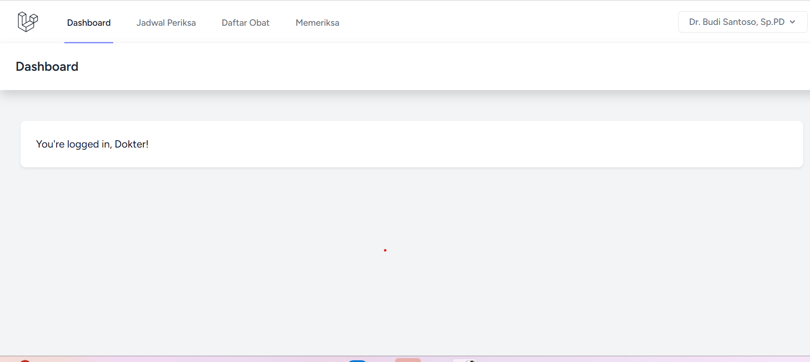
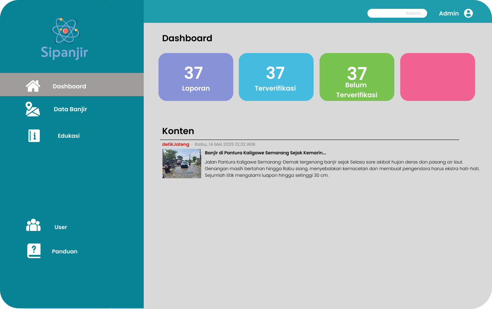
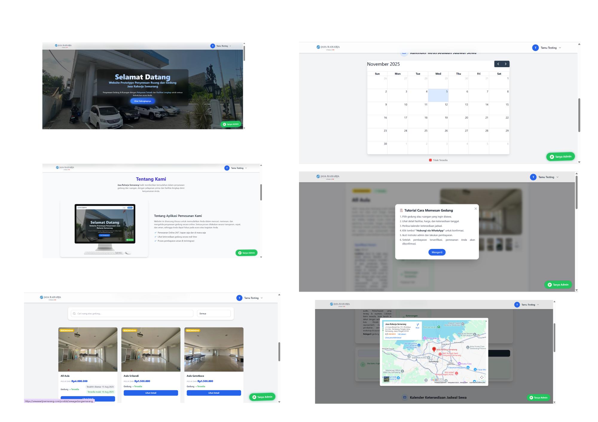
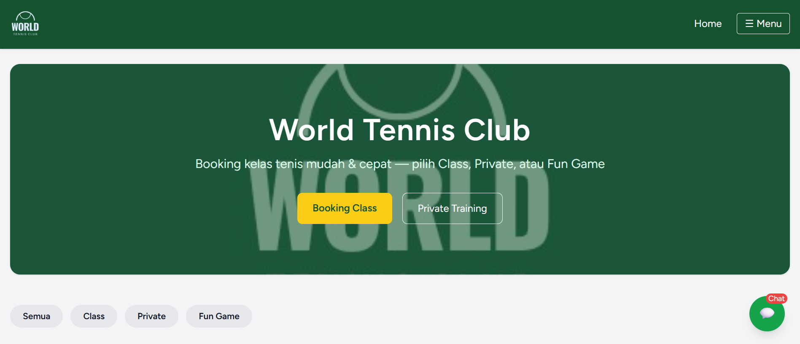

Beberapa proyek yang pernah saya kerjakan

Aplikasi berbasis web yang dikembangkan menggunakan Laravel untuk mengelola proses pendaftaran pasien dan booking jadwal pemeriksaan secara online.
Dalam proyek ini, saya berperan sebagai Fullstack Developer yang mengembangkan fitur utama seperti autentikasi multi-role (dokter & pasien), sistem booking jadwal, dashboard pasien, serta manajemen data pasien.
Saya juga mengimplementasikan relasi database menggunakan MySQL serta memastikan sistem berjalan secara dinamis dan responsif menggunakan Laravel Blade dan Bootstrap.
GitHub
SIPANJIR merupakan aplikasi berbasis web yang dirancang untuk membantu memantau potensi banjir berdasarkan data curah hujan dan informasi dari berita.
Dalam proyek ini, saya mengembangkan fitur dashboard yang menampilkan data curah hujan dari API, halaman riwayat banjir, serta halaman edukasi untuk meningkatkan kesadaran masyarakat terhadap risiko banjir.
Proyek ini membantu saya memahami integrasi API, pengolahan data, serta pembuatan tampilan informasi yang mudah dipahami oleh pengguna.
Sistem ini digunakan untuk mengelola jadwal pemeriksaan antara pasien dan dokter secara digital.
Saya mengembangkan fitur autentikasi multi-role (admin, dokter, pasien), sistem booking jadwal, serta riwayat pemeriksaan pasien.
Selain itu, saya juga mengatur struktur database, relasi antar tabel, serta validasi input agar sistem berjalan dengan baik dan minim error.
GitHub
Proyek ini merupakan sistem penyewaan ruangan berbasis web yang saya kerjakan saat menjalani magang.
Saya berperan sebagai Backend Developer yang bertanggung jawab dalam pengembangan logika sistem menggunakan Laravel.
Saya mengembangkan fitur seperti autentikasi multi-role (admin & tamu), CRUD data ruangan, sistem booking, manajemen status ketersediaan, serta integrasi pemesanan melalui WhatsApp.
Selain itu, saya juga merancang struktur database dan relasi antar tabel agar sistem dapat berjalan secara efisien dan terstruktur.
GitHub
Website ini dikembangkan sebagai media informasi dan promosi untuk komunitas World Tennis Club Kendal.
Saya berkontribusi dalam pengembangan tampilan website agar responsif dan mudah digunakan, serta membantu dalam pengelolaan konten seperti jadwal latihan dan informasi kegiatan.
Website ini bertujuan untuk mempermudah penyebaran informasi kepada anggota dan masyarakat umum.
Lihat Website